G2026 原理图 · 图文逐件讲解 2026-10-04 · 活体矢量渲染，讲解标在图上
看图方法：橙色线+箭头 = 信号流向（沿真实导线） · 每个器件旁的框 = 信号到此会怎样 / 为何放这里 / 为何是这个值 · 红虚线框 = 实体值与图面值不一致（9 处） · 蓝虚线 = 偏置/电源支路。完整文字版见 44 号。
① AFE 页 · 前端模拟（34 位号）—— 信号从 SMA 走到 PA1
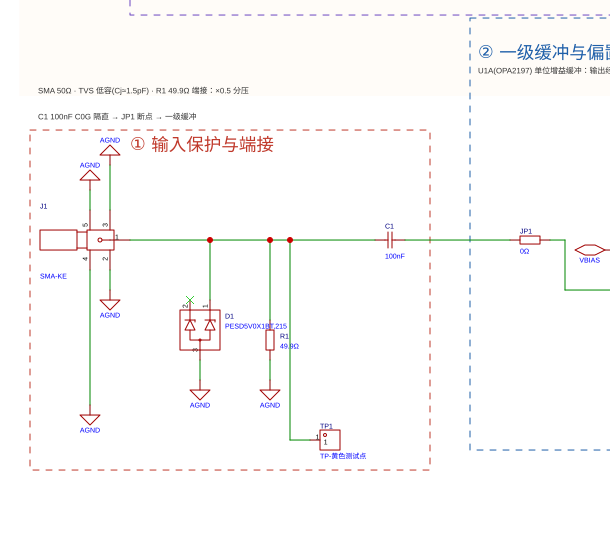
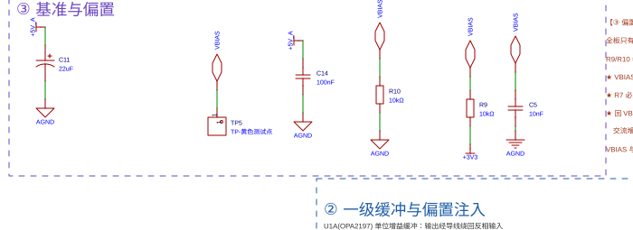
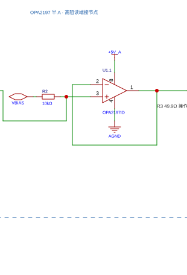
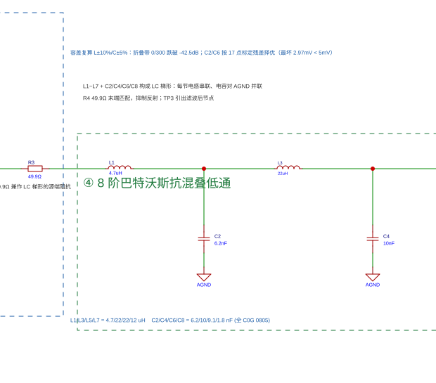
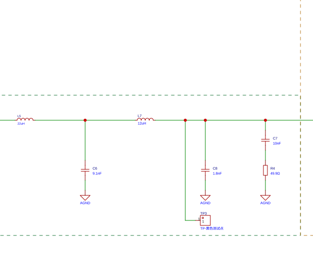
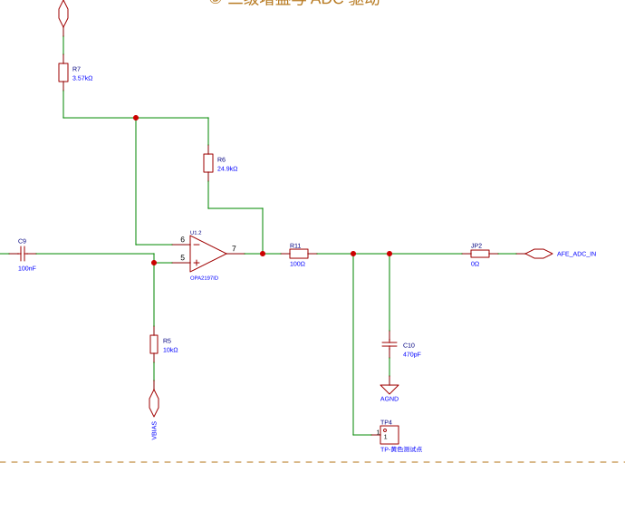
② INT 页 · 核心板与接口（26 位号）—— MCU 和屏之间的桥
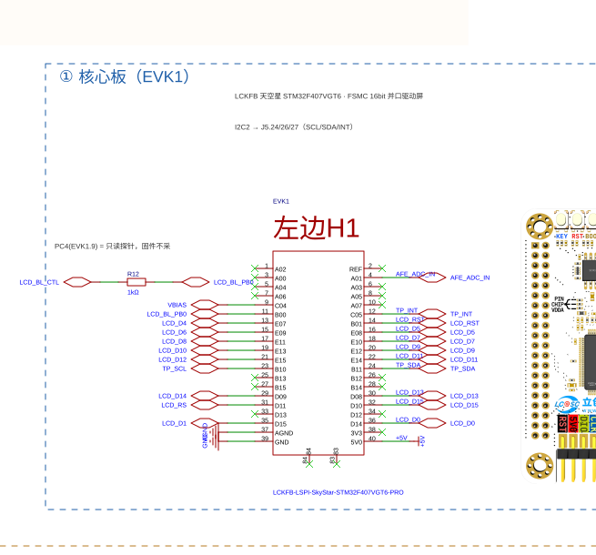
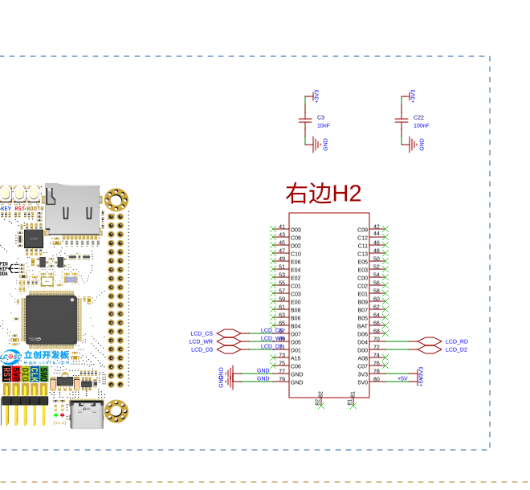
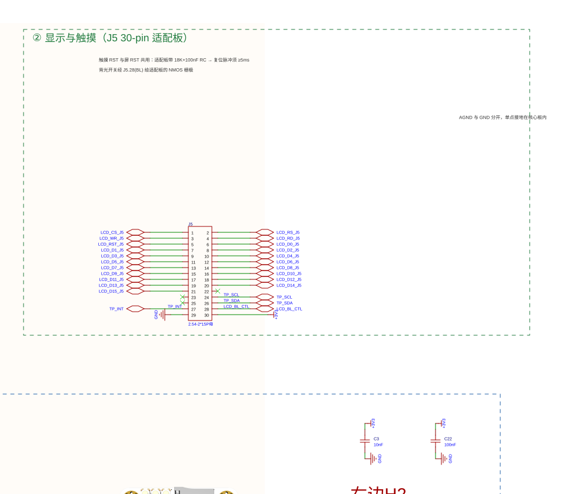
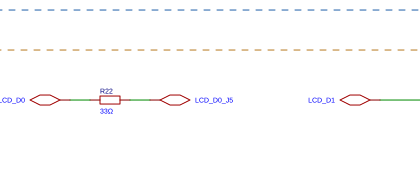
③ PWR 页 · 电源与触摸上拉（4 位号）
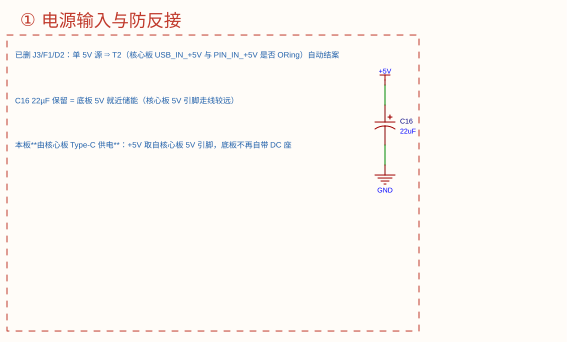
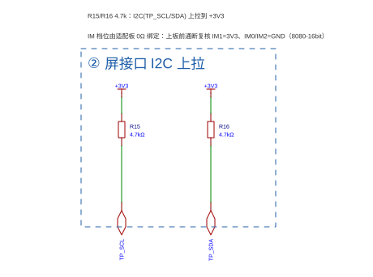
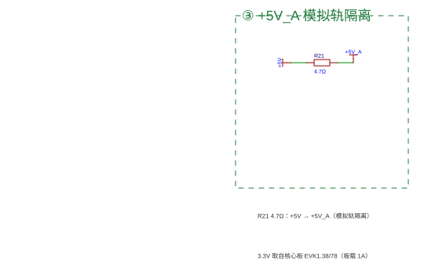